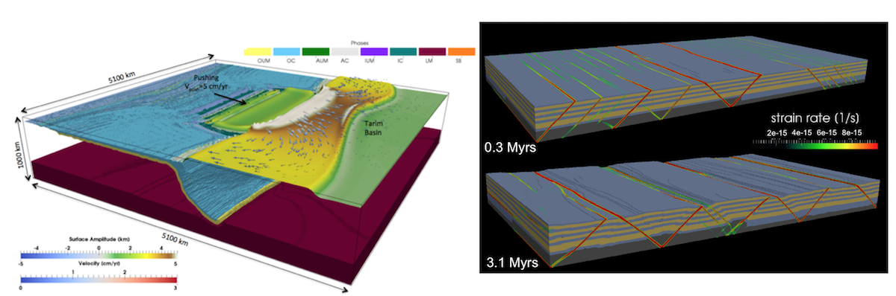

LaMEM Userguide

LaMEM (Lithosphere and Mantle Evolution Model) is a software package to simulate 2D/3D geological and geomechanical processes, which runs on anything from your laptop to a massively parallel machine. It takes (poro)-visco-elasto-plastic rheologies into account, and can be used to simulate anything from the collision of tectonic plates to the flow of fluids through porous rocks.
The purpose of this wiki is to get you started with installing and running LaMEM and give a few worked-out examples that explain how to run LaMEM on your local machine or cluster.
Contents
- 1. Installation
- 2. Getting Started
- 3. Initial Model Setup
- 4. Examples
- 5. Features
- 6. LaMEM Development
- 7. LaMEM Debugging
Features
LaMEM contains a number of features, specifically tailored to simulate geological processes and complex geometries:
2D/3D parallel thermomechanical code for cartesian geometries
Build from the onset to run on MPI-parallel machines; the largest we tested had 458'752 processors
Support for both direct solvers and multigrid solvers
Marker and cell approach to simulate complex geometries and large strains
Newton solvers for nonlinear iterations
Multiple ways to create model geometries: (1) Build-in geometrical objects, (2) MATLAB/Octave input files, (3) GeomIO support to create 2D/3D input geometries from vector graphics, (4) Voxel-based input (to compute effective permeabilities of porous rocks).
Mechanical solver for visco-elasto-plastic solvers, for both (thermo)-elastic bulk compressible and incompressible cases
Nonlinear combined rock creep laws and (regularized) non-associated plasticity
Internal free surface and sticky air approach
Energy solver with shear heating
Fluid pressure and Darcy solver for groundwater flow
Phase transitions, by taking (multiple) precomputed phase diagrams into account
Partial melting
Simplified erosion/sedimentation algorithms
Breakpointing/restarting options
Adjoint formulations to perform inversions and derive scaling laws
Getting started
We recommend that your start with reading the installation instructions.
Extending this userguide
The userguide consists of Markdown pages which is compiled into webpages using the julia Documenter.jl package. The pages are listed in the
/docsdirectory of this repository. You can extend it by adding new pages to the repository, which can be added to the side menu by modifying make.jl. It will be automatically compiled when you push